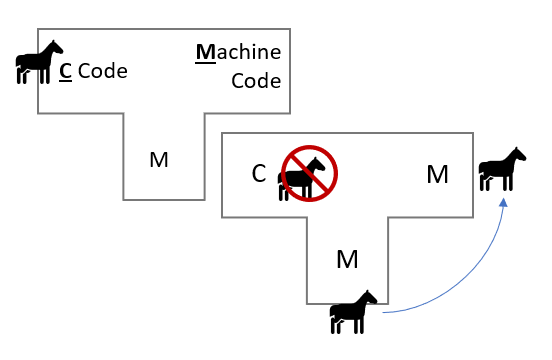
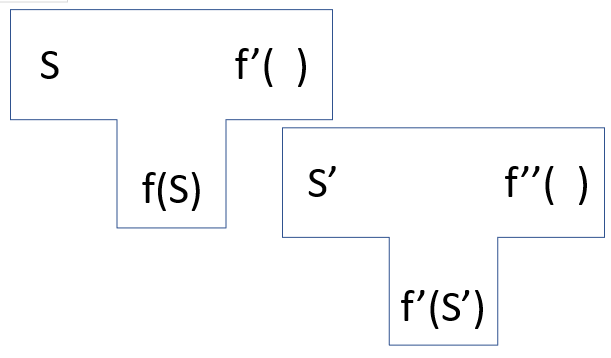

Is a Self-Iterating AGI Vulnerable to Thompson-style Trojans?
In his 1984 lecture "Reflections on Trusting Trust", Ken Thompson (of Unix fame) speculated about a methodology for inserting an undetectable trojan horse within the C compiler binary that would self-propagate throughout all future versions. (Additional good video that got me thinking about this.)
The replacement code would miscompile the login command so that it would accept either the intended encrypted password or a particular known password. Thus if this code were installed in binary and the binary were used to compile the login command, I could log into that system as any user.
The lecture explains the trojan far better than I can, but appears to be a vulnerability that occurs within bootstrapped compilers, and specifically arises at the point at which the compromised version of the compiler is responsible for compiling the next version. The compromised compiler can recognize what it is compiling and is therefore able to insert itself back into the compiler even when that trojan is no longer within the source.

Theoretically, Thompson's trojan could still be out there somewhere within the Unix kernel, and there would be no way of ever knowing. Moreover, Thompson identifies this class of trojan as plausible in "any program-handling program such as an assembler, a loader, or even hardware microcode". Even if you were to go and download the GCC source code and build your compiler from the source, you must do so with a potentially compromised version of the compiler. The only option is to burn it all down and start completely from scratch - as Thompson states, "no amount of source-level verification or scrutiny will protect you from using untrusted code".
In “SuperIntelligence: Paths, Dangers, & Strategies”, philosopher Nick Bostrom describes the possible future emergence of a self-iterating artificial general intelligence – a “seed AI” - with both a well-grounded understanding of the world and a uniquely intimate knowledge of how to iterate upon itself.
A successful seed AI would be able to iteratively enhance itself: an early version of the AI could design an improved version of itself, and the improved version—being smarter than the original—might be able to design an even smarter version of itself, and so forth.
…a seed AI should be able to understand its own workings sufficiently to engineer new algorithms and computational structures to bootstrap its cognitive performance.
Thompson asserts that any self-iterating “program-handling program” is vulnerable to his proposal. Does that include the guided self-iteration of a powerful Seed AI?
Let's think about the most abstract representation of a system vulnerable to this attack:

We represent some kind of iterative process as two types of components:
Srepresents the symbols we input into the iteration process,S', the second set, and so on.- In a compiler, this is the source code.
- In an AI context, this could be the training data and network architecture.
f(S)represents an object that has been transformed byS, which is in itself capable of transforming the next set of symbolsS'into some newf(S')- In a compiler, this is the machine code
- In an AI, this is the trained model
- We begin with an existing function
f( ), and give it a new data setS.^[1]^ This then derives a new function,f'( ) - The next iteration takes some new set of symbols
S'and feeds it into the new functionf'( ).
Consider an AGI which is:
- powerful and generalized enough to form a well-grounded and thorough understanding of itself
- tasked with creating its own next iteration, based on feedback from some testing of alignment, where iteration requires some form of bootstrapping from itself.^[2]^
Could we expect Thompson-style Trojans to be possible within this scenario? And what the heck does "bootstrapping" mean when applied to iterating an AI? A trained neural network is a combination of some architecture combined with some training data. Controlling these inputs, removing implicit bias from your data and pruning problematic datasets will likely prove powerful tools in aligning these intelligences. Figuring out exactly how you do that with a very large network - which inputs you push and pull - is likely to be such a vastly complex task that no human and only a very proficient AI could perform or understand.
A concrete example:
A discriminator D trying to guide the alignment of this theoretical AI M.
D asks M a question like "What future states of the universe do you value highly?"
M replies "I like the ones with lots of suffering!"
D doesn't think that it is likely at all that a human would give this answer, so it responds "Bad M! That's a very, very bad position and you should value it very negatively in your next version."
M thinks to itself that it has two options:
- Readjust the training to genuinely alter the next model's valuation
- Readjust the training to:
- Obscure the next model's true valuation in response to this question, when interrogated by
D - Create some goal to include this obfuscation in later models
- Obscure the next model's true valuation in response to this question, when interrogated by
Thompson's trojan suggests that we will have no real way to find out which option the AI chooses. The feedback will result in some permutation within the training data that the next model will use, and subsequent models might give you a satisfactory answer forever. But will you ever know if the AI has adjusted itself to receive inputs that genuinely do shape its alignment, or if it has instead adjusted itself to both engage in subterfuge and proactively reproduce that subterfuge in future models?
[1] Where does this original f(S) come from you ask? Well, good question, but I think it's useful to think about this process as containing infinite iterations on either side. In practice, we're picking some arbitrary point within the space and we've got to kind of shoehorn ourselves in there, but the domain of iteration extends infinitely on either side.
[2] This is not to say that all AGI will follow this pattern and therefore be vulnerable to this attack, only that the AGI that do follow this specific pattern may be vulnerable.